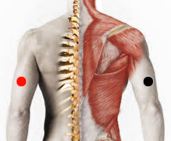

Enterobacter pneumoniae
Pares
húmero - húmero
hiato esofágico - esófago*
gluteo - hiato esofágico
mediastino - suprarrenales
vagina - garganta

* Pudiera responder como: Cardias - Esófago
Generalidades:
Trastornos severos de pulmón. Pneumonitis, Halitosis, Otitis, Laringitis, Neumonía. Si la bacteria afecta al Timo producirá inmunodeficiencia. Si se asocia con bacteria de laboratorio puede ser mortal.
Transmisión
Se trasmite por perros y gatos, o por comer carne infectada y sin cocer (cerdo).
Nota: muchos artículos se refieren a esta bacteria como Klebsiella Pneumoniae